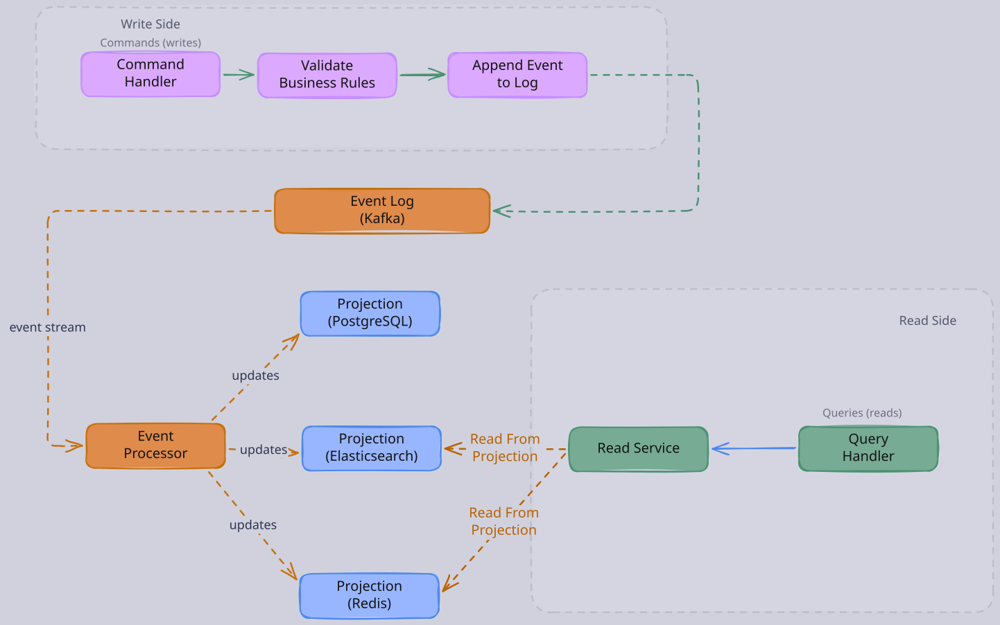
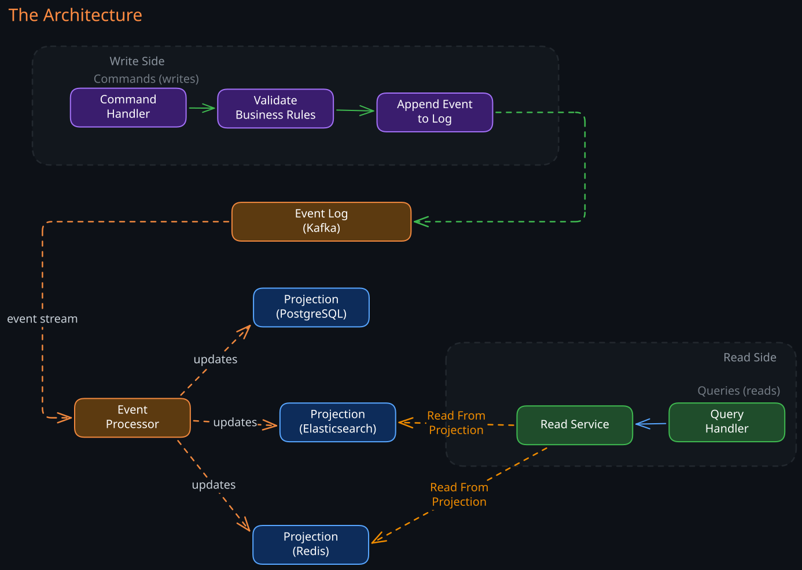

The Story
The entire blockchain is just event sourcing with cryptographic proof. Satoshi Nakamoto rediscovered a pattern that accountants have used since 1494, when Luca Pacioli formalized double-entry bookkeeping — you never erase a transaction, you append a compensating entry. The ledger is the log. The irony: banks, who invented event-sourced ledgers five hundred years ago, spent billions trying to adopt “blockchain technology” as if it were something revolutionary. They were buying back their own idea with extra steps and a proof-of-work tax.
Traditional databases store current state. When a user’s balance changes from 100, the database overwrites 100. The history of how the balance reached $100 is lost. This works for most applications, but for systems where auditability, temporal queries, or independent read/write scaling matter, the loss of history is a fundamental limitation.
Event sourcing addresses this by inverting the storage model: instead of storing current state, you store the complete sequence of events that produced the current state. CQRS (Command Query Responsibility Segregation) is the natural architectural companion — separating the write model (the event log) from read models (materialized views optimized for specific query patterns). Together, they form a powerful pattern for systems with complex business rules, high audit requirements, or extreme read/write asymmetry.
These patterns appear throughout production systems: financial exchanges store order events as the source of truth, e-commerce platforms use event logs for inventory reconciliation, and collaborative editors track operation histories for undo and conflict resolution.
Related Topics: 02-Change-Data-Capture, 01-Kafka, 01-Choreography-Orchestration, Ch11-Stream-Processing
1. Event Sourcing: State as a Projection of Events
1. The Core Idea
Instead of storing the current balance as a mutable row, store every event that affected the balance:
AccountCreated(user_id=123, balance=0)
Deposited(user_id=123, amount=100)
Withdrawn(user_id=123, amount=20)
Deposited(user_id=123, amount=20)
The current balance ($100) is computed by replaying these events in order. The event log is the source of truth. The current balance is a projection — a derived, read-optimized view that can be recomputed from the log at any time.
This is not an abstract pattern. It maps directly to how 01-Kafka works (an immutable, append-only log), how database write-ahead logs work (replay the log to reconstruct state), and how version control works (the commit history is the truth; the working tree is a projection).
2. Why This Matters in Practice
Full audit trail. Every change is recorded with its timestamp, actor, and context. You can answer not just “what is the balance?” but “how did the balance reach this value?” and “who initiated each change?” This is a regulatory requirement in banking, healthcare, and financial trading.
Time-travel queries. Reconstruct the state at any historical point by replaying events up to that timestamp. “What was the user’s balance at 3 PM yesterday?” is a replay operation, not a separate versioning system bolted on after the fact.
Multiple projections from the same events. The same event log can feed different read-optimized views. One projection computes current balances, another computes monthly spending trends, a third detects suspicious patterns. You add new projections later without modifying the event log or existing projections. This is the key advantage over traditional architectures where adding a new query pattern often requires schema changes or new denormalized tables.
Bug recovery. If a bug corrupts a projection, fix the bug and replay the entire event log to rebuild the projection from scratch. The event log is immutable — application bugs cannot corrupt it. The corrupted projection is simply discarded and rebuilt. In a traditional system, a bug that writes incorrect data to the database may require manual data repair or restoration from backups.
Deterministic replay. Given the same sequence of events, any instance produces the same state. This enables testing (replay production events in a test environment), debugging (reproduce the exact state that led to a bug), and disaster recovery (rebuild state from the event log on a new node).
2. Event Sourcing in Practice: The Exchange Pattern
A cryptocurrency exchange demonstrates event sourcing at its most rigorous. The matching engine — the core component that pairs buy and sell orders — is a pure in-memory state machine with no durable local state. This sounds fragile, but the recovery model is elegant.
1. Write Path: Events as Source of Truth
- A client submits an order. The Order Service validates it, reserves the user’s balance, and publishes an
OrderPlacedevent to 01-Kafka. - The matching engine consumes
OrderPlacedevents, matches them against the in-memory order book, and producesTradeExecutedevents. - The settlement service consumes
TradeExecutedevents and updates balances atomically. Kafka retains all events (configurable retention, typically 7+ days). The matching engine’s in-memory state is entirely derived from this log.
2. Crash Recovery via Snapshots and Replay
The matching engine periodically (every 60 seconds) serializes its in-memory order book to a snapshot:
- Serialize the order book to binary (Protocol Buffers).
- Write to durable storage:
s3://exchange-snapshots/{pair}/{timestamp}.pb. - Record the corresponding Kafka offset in Redis:
snapshot_offset:BTC-USD = 984531000.
On crash recovery:
- Load the latest snapshot from S3 (takes <1 second).
- Replay Kafka events from the snapshot’s offset forward (~60 seconds of events, takes <5 seconds).
- Total recovery time: ~6 seconds.
A warm standby instance continuously replaying the same event stream reduces failover to ~1 second.
3. The Key Property
The Kafka event log is the source of truth, not the matching engine’s memory. The engine is a deterministic state machine: given the same sequence of events in the same order, any instance produces the same trades. This makes the system fully replayable, auditable, and recoverable.
3. CQRS: Separating Reads from Writes
1. The Motivation
The data model that is optimal for writes is rarely optimal for reads. The write side (the event log) is optimized for appending new events — sequential writes, no indexes, no denormalization. The read side needs fast lookups by various keys, aggregations, full-text search, and complex queries.
In a traditional architecture, a single database serves both roles, and the schema is a compromise: enough indexes for reads, but not so many that writes become slow. CQRS eliminates this compromise by giving each side its own model.
2. The Architecture


The write side accepts commands, validates them against business rules, and appends events to the log. The read side subscribes to the event stream and maintains one or more materialized views optimized for specific query patterns.
3. Why Separate Models Matter
- Independent scaling. Read-heavy workloads scale the read side (add replicas of the materialized view) without affecting write throughput. Write-heavy workloads optimize the event log independently. A system processing 100,000 writes per second and 10 million reads per second can scale each side to match its actual load.
- Optimized data models. The read side can use completely different technology from the write side. The event log might be in Kafka. The read-side views might be in PostgreSQL for relational queries, 01-Elasticsearch for full-text search, and 01-01-Redis for low-latency lookups — all derived from the same events. Each store uses the schema and indexes that are optimal for its access pattern.
- Polyglot query support. Adding a new query pattern (say, a leaderboard or a geospatial search) requires only a new event consumer that builds a new projection. No schema migration on the write side. No risk to existing read paths. The event log is a stable interface that decouples producers from consumers.
4. The Consistency Tradeoff
The read side is eventually consistent with the write side. There is an inherent lag between when an event is appended and when the materialized view reflects it. For a well-tuned system, this lag is typically sub-second, but it is not zero.
- For most use cases, this is acceptable. A social media feed that is 500ms behind the latest post is fine. An analytics dashboard that is 2 seconds behind is fine.
- For cases where the user must see their own writes immediately (a user submitting an order and then viewing their order list), two strategies handle the gap:
Read-your-writes from the write side. After submitting a command, the application reads the result directly from the write side (or from a synchronous response) rather than querying the projection. This bypasses the eventual consistency lag for the user’s own data.
Versioned reads. The command returns the event’s sequence number. The client includes this sequence number in subsequent read requests. The query handler waits until the projection has processed at least that sequence number before responding. This adds latency to the read but guarantees freshness.
4. When to Use Event Sourcing and CQRS
1. Strong Fit
- Audit and compliance requirements. Financial systems, healthcare records, and regulated industries where every change must be traceable and the history must be immutable. Event sourcing provides this by construction rather than requiring a separate audit logging system.
- Complex domain logic with many invariants. Systems where business rules are intricate and evolving. Event sourcing makes it possible to replay events through updated business logic, retroactively applying new rules to historical data.
- High read/write asymmetry. Systems where reads vastly outnumber writes and different read patterns require different data models. CQRS allows each read pattern to have its own optimized store.
- Systems requiring temporal queries. “What was the state at time T?” is trivial with event sourcing (replay to T) but requires complex versioning infrastructure in traditional systems.
- Systems requiring replayability. ML feature stores, simulation engines, and testing environments benefit from being able to replay production events to reproduce behavior.
2. Poor Fit
- Simple CRUD applications. If the domain logic is straightforward (create, read, update, delete with no complex invariants), event sourcing adds complexity without proportional benefit. A single database with standard ORM is simpler and sufficient.
- Low-value audit trails. If no one will ever query the event history, storing it has cost without benefit. Event sourcing’s value comes from using the history, not just having it.
- Teams without operational maturity for distributed systems. Event sourcing with CQRS requires running Kafka (or equivalent), maintaining consumers, handling schema evolution, managing projections, and debugging eventual consistency issues. If the team does not have experience operating distributed streaming infrastructure, the operational burden may outweigh the architectural benefits.
5. Challenges and Operational Realities
1. Storage Growth
Storing every event consumes more space than storing only current state. A user who updates their profile 1,000 times generates 1,000 events, whereas a traditional database stores only the current row.
- Snapshotting mitigates this: periodically save the current projected state so that replay starts from the snapshot rather than the beginning of time. The snapshot frequency determines the tradeoff between storage savings and replay speed. Common practice: snapshot every N events or every T minutes, whichever comes first.
- Event compaction (Kafka log compaction) retains only the latest event per key, discarding earlier events for the same entity. This reduces storage but destroys the full history. Use compaction only for projections that do not need historical replay.
2. Replay Performance
Rebuilding a projection from millions of events can take hours. This matters during:
- Initial deployment (building projections for the first time)
- Bug recovery (replaying after fixing a corrupted projection)
- Adding new projections (processing the entire historical log)
Mitigation strategies:
- Parallelized replay across partitions
- Incremental replay from the latest snapshot
- Pre-built snapshots stored alongside the event log
- Serving stale data from the old projection while the new one catches up
3. Schema Evolution
Events are immutable — you cannot go back and change their schema. Version 2 of the application must be able to interpret version 1 events. This requires careful upfront design:
- Event versioning. Include a version field in every event. Consumers implement upcasters that transform old event formats to the current format before processing. This keeps consumer logic clean while supporting historical events.
- Additive-only changes. Adding new fields to events is always safe (old consumers ignore them). Removing or renaming fields is dangerous (old events lack them). Prefer adding new event types over modifying existing ones.
- Schema registry. Use a schema registry (Avro with Confluent Schema Registry) to enforce backward compatibility at the infrastructure level. Reject any schema change that would break existing consumers.
4. Idempotent Event Processing
Events may be delivered more than once (consumer crashes after processing but before committing the offset). Every projection builder must be idempotent: processing the same event twice must produce the same result as processing it once.
- For set operations (overwrite a field, insert-or-update by primary key), idempotency is natural. For additive operations (increment a counter, append to a list), idempotency requires deduplication — typically by tracking processed event IDs and skipping duplicates.
6. The Relationship Between Event Sourcing, CQRS, and CDC
These three patterns are related but distinct:
| Pattern | Source of Truth | Derived State | Scope |
|---|---|---|---|
| Event Sourcing | Application event log | Projections rebuilt from events | Within a bounded context |
| CQRS | Separated write/read models | Read models updated from write model | Within a service |
| CDC | Database WAL | External stores synced from WAL | Across systems |
- Event Sourcing means the application stores events, not state. The events are the truth.
- CQRS means reads and writes use different models. CQRS does not require event sourcing — you can have separate read/write models backed by a traditional database. But event sourcing naturally leads to CQRS because the event log is write-optimized and needs separate read models.
- CDC captures changes from a traditional database (which stores current state, not events) and streams them elsewhere. CDC operates at the infrastructure layer. Event sourcing operates at the application layer. They solve related but different problems.
In practice, these patterns often compose: an event-sourced service uses CQRS internally (event log + projections), and CDC is used to propagate changes from the projections to external systems (search indexes, analytics).
Revision Summary
- Event sourcing stores the complete sequence of domain events rather than current state; current state is a derived projection that can be rebuilt from the log
- The event log is immutable and append-only; this provides audit trails, time-travel queries, and bug recovery by replay
- Snapshots reduce replay cost by periodically saving projected state; recovery replays only events after the latest snapshot
- CQRS separates the write model (event log, optimized for appends) from read models (projections, optimized for queries)
- CQRS enables independent scaling, polyglot query support, and optimized data models for each access pattern
- The read side is eventually consistent with the write side; read-your-writes and versioned reads handle the gap for user-facing flows
- Event sourcing and CQRS add significant complexity (schema evolution, replay infrastructure, eventual consistency); they are not appropriate for simple CRUD systems
- Event sourcing operates at the application layer (domain events); CDC operates at the infrastructure layer (database WAL changes); they are complementary, not interchangeable
Deep Understanding Questions
-
An event-sourced system has been running for 3 years and accumulated 2 billion events. A critical bug is discovered in the projection logic that has been silently miscalculating balances for 6 months. You need to rebuild the projection. The last snapshot is 1 day old. How do you approach this? What is the impact on read availability during the rebuild? How long might it take? Ans:
-
A new business requirement introduces a “loyalty points” feature that should retroactively credit points for all historical purchases. With event sourcing, this means processing every
PurchaseCompletedevent through a new projection. With a traditional database, this means a batch SQL update. Compare the complexity, correctness guarantees, and operational risk of each approach. Ans: -
In a CQRS system, a user submits an order and immediately navigates to “My Orders.” The event has been appended to the log but the read projection has not yet processed it. The user sees an empty order list and panics. What are the architectural options for handling this? What are the tradeoffs of each? Ans:
-
Two commands arrive simultaneously for the same aggregate (e.g., two concurrent withdrawals from the same account). The command handler must validate that the balance is sufficient before appending the event. How do you prevent both commands from reading the same balance and both succeeding, resulting in a negative balance? What concurrency control mechanism does the write side need? Ans:
-
An event-sourced matching engine takes periodic snapshots to S3. The snapshot at offset 1,000,000 is corrupted (S3 bit rot, incomplete write). The previous snapshot is at offset 900,000. On crash recovery, the engine loads the offset-900,000 snapshot and replays 100,000 extra events. What is the impact on recovery time? How would you design the snapshot system to detect and handle corruption? Ans:
-
Your event schema needs to change: the
OrderCreatedevent must include a newcurrencyfield. Old events do not have this field. Describe three different strategies for handling this schema evolution. Which strategy would you choose for a system processing 10,000 events per second, and why? Ans: -
A CQRS system has 5 different read projections, each consuming the same event stream. Projection A processes events in 2ms each, while Projection E takes 200ms each. What happens to Projection E’s consumer lag over time? How does this affect the freshness guarantee for queries against Projection E? What architectural options exist to address this? Ans:
-
An event-sourced system stores events in Kafka with 7-day retention. A regulatory requirement mandates that all events must be retained for 7 years. Kafka is not designed for long-term archival. How do you architect the system to satisfy both Kafka’s operational needs and the regulatory requirement? Where do events live after 7 days? Ans:
-
The write side uses optimistic concurrency control: appending an event succeeds only if the aggregate’s version matches the expected version. Under high contention (many concurrent commands for the same aggregate), most commands fail and must be retried. At what contention level does this become a performance problem? What alternative concurrency strategies exist for event-sourced systems? Ans:
-
A team decides to adopt event sourcing for a service that currently uses a traditional PostgreSQL database with 500 tables and complex JOIN queries. What is the migration strategy? Can you incrementally adopt event sourcing, or must it be all-or-nothing? What are the biggest risks during the transition? Ans: